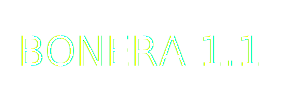
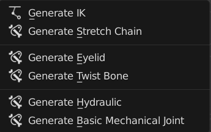

Bonera 
Sections:
Overview
Bonera Toolkit
Panel
Menu
Operators
Create Operators
Bone Tool Operators
Generators Operators
Generate IK
Generate Stretch Chain
Generate Eyelid
Generate Twist Bone
Generate Hydraulic
Generate Basic Mechanical Joints
Utility Operators
Driver Tool Operators
Cleanup Operators
Pseudo Bone Layer
Pair List Renamer
Bone UI Slider Generator
Preferences
Add Your Own Custom Bone Shape
Bonera
»
Bonera Toolkit
»
Generators Operators
View page source
Generators Operators
Generators Operator are Operator that do some common rig setup that is repetitive

Generate IK
Generate Stretch Chain
Generate Eyelid
Generate Twist Bone
Generate Hydraulic
Generate Basic Mechanical Joints